Costa Rica 2010
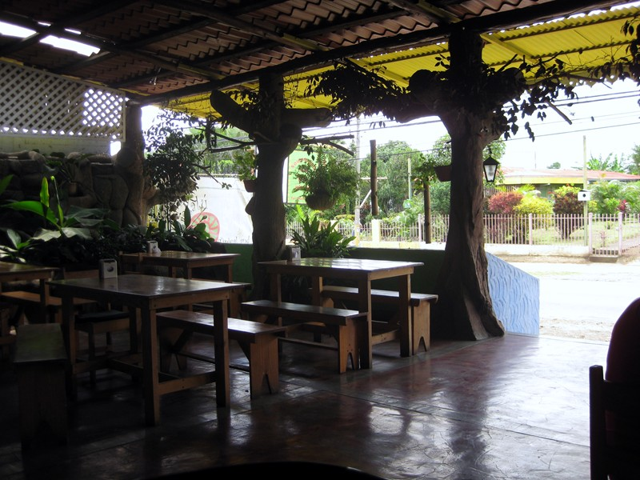 |
The hardest part of this trip was getting there. Dave called to ask me to pick up his 17 yo kid, whose flight from Honolulu to an internship at Hopkins had been rerouted to Dulles. Couldn't do it, my flight left an hour earlier. Dropped my car at Sharon's and she took me to Dulles. Then storms in Atlanta delayed takeoff until I was sure to miss the connection to San Jose. Called Sharon, who drove back to Dulles and picked me up. Got my car at her place, drove backed to Dulles, picked up kid and drove him to Baltimore. Daniel was staying on the edge of the red light district--a few blocks away we spotted a grey-haired guy walking down the street with nothing on but a g-string over his ass and cowboy boots. Dropped him off. Dave was pissed that I hadn't waited to see him get in the building--and he hadn't seen The Wire. Bal'mer has a rep. Went home and got up at 4:30 for a AM flight. This in turn screwed up my ground transportation from San Jose to the farming village of Potrero where I was staying. Ended up waiting 3 hrs at this restaraunt for the 5 hr bus trip. The food was almost worth it. Got jerk chicken with "race and beans" that was different from, and better than, anything from the Carribean. |
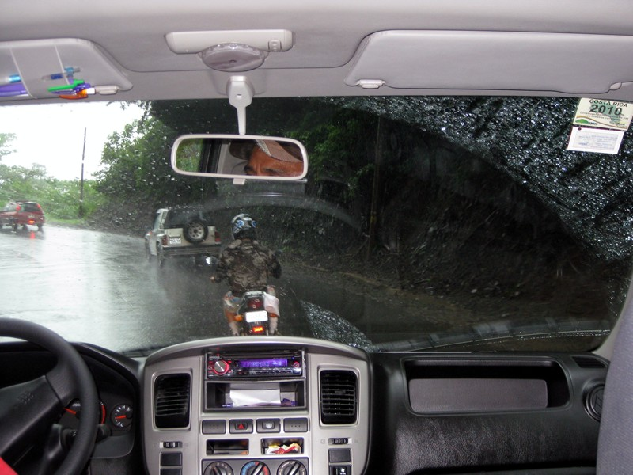 |
| Real bikers ride in the rain. This was a tropical downpour that doesn't show in the pic. It was raining like a motherfucker. |
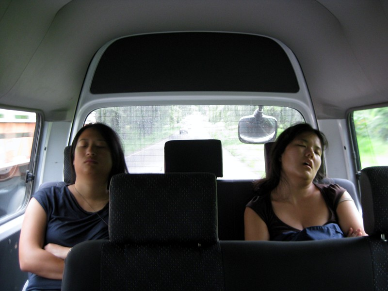 |
It was a long, boring, rainy ride to Potrero. My vanmates didn't help much. If you're not familiar with this, Costa Rica has a nationwide network of super shuttles that cover not only the airports but all the towns and tourist destinations. They take almost all of the hassle out of transportation. |
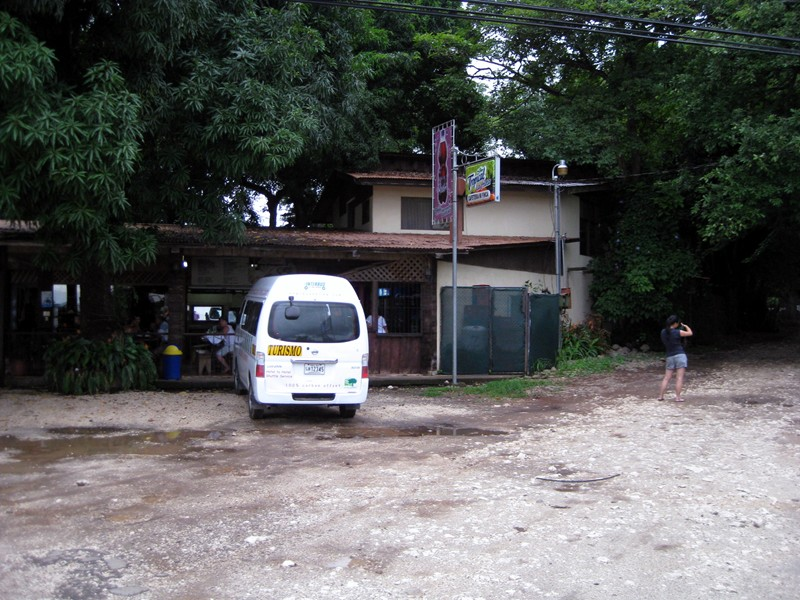 |
We stopped here for good but tourist-priced ($4) chicken empanadas. The driver kept asking if I liked coffee--we were driving past endless coffee plantations--until I assured him I was supporting the whole economy myself at Starbucks. He was animated and helpful and hyper-friendly, laughing even when I said something unfunny like "OK, I turned the fan off." Near the end of the trip, he asked us to put compliments about the service in his log book, stressing he got paid for them. Then he started acting like I would if I'd driven five hours through the rain on Father's day, and it was 7PM and I had another five hours to get back. |
i
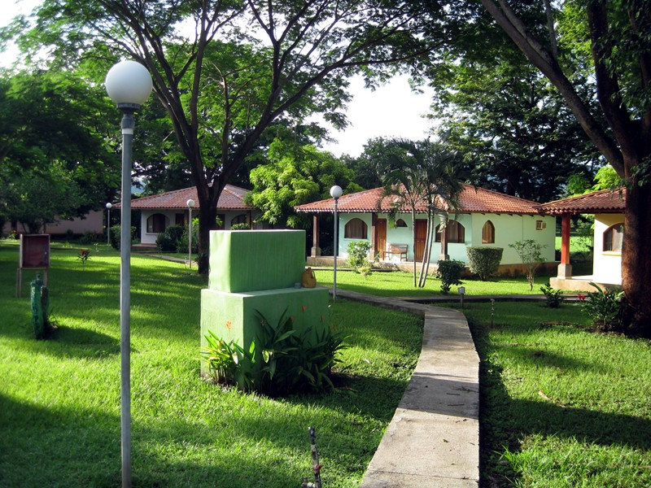 |
Finally, the villas in Potrero. This is where I stayed last time--the whole trip felt like a homecoming. However, because it had been raining like a motherfucker, the stones were coated with slick moss and the first thing I did was slip--vibram-soled hiking boots from REI nonwithstanding--and got blood all over my camera lens. Fortunately this stuck me as funny. (If you don't like slapstick, incarnate on some other world.) |
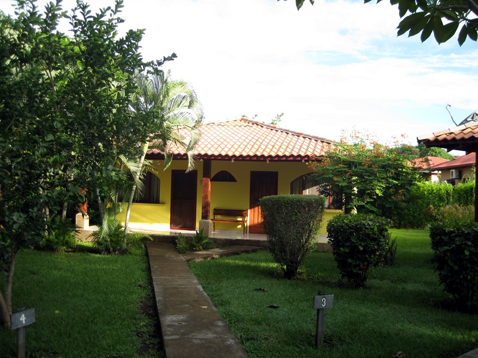 |
My villa. I called it the insectarium because of all the species on the floor. There was one big lumbering beetle who kept waddling toward the dark whenever I turned a light on. Tried to shoo him out the door rather than stepping on him. Misplaced kindness--a few minutes later I spotted him being eaten alive by two smaller critters. Between jet lag, sleep loss and low blood sugar (and blood loss?), had a huge panic attack that evening. Took pills and slept it off. A few days later, remembered that exactly the same thing had happened last time. |
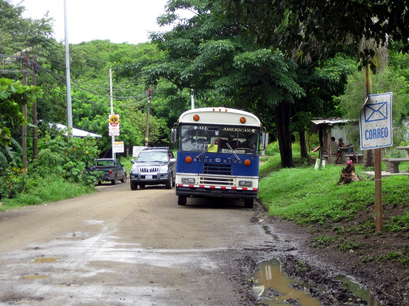 |
Missed the school bus the next morning and started the hour-long walk, only to find public transportation. This was funny because when I worked for a three-letter agency, the Bluebird was the interoffice shuttle. Maybe we gave them to Nicaragua as reparation for encouraging a civil war, and they found their way across the border. A lot of Nicas make it across the border too, and my Spanish teachers were at pains to tell me that they were violent and didn't fit and were only there because Costa Ricans were too lazy to do the menial jobs. |
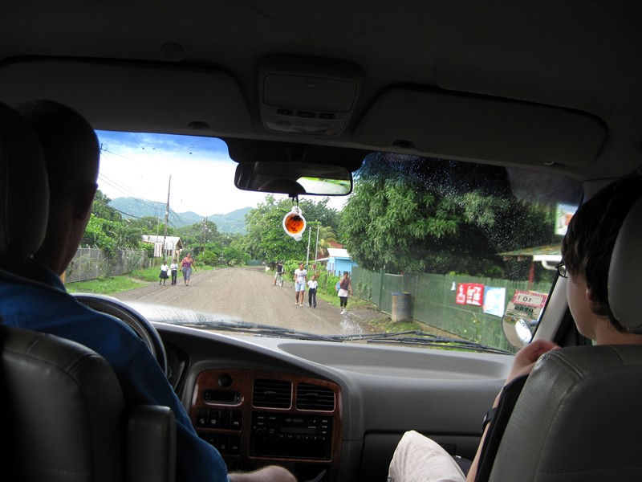 |
Missed getting a picture of the guy on horseback. More later on some conversations with fellow students inside the van. Victor the van driver saw a student running for the bus and commented "Los Costarequenses corren solamenta para el bano." (Costa Ricans only run if they're going to the bathroom.) |
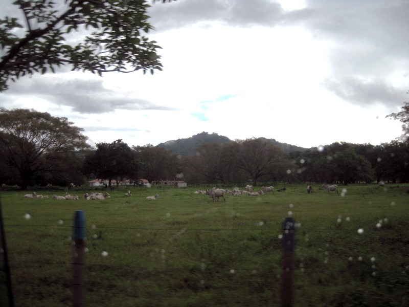 |
Cows and rain. Didn't really want to go in the rainy season...several downpours per day...but CSC's increasingly confiscatory vacation policy forced me to burn time. If they want people to go around saying "I am CSC" (this year's slogan) they shouldn't keep eroding benefits. |
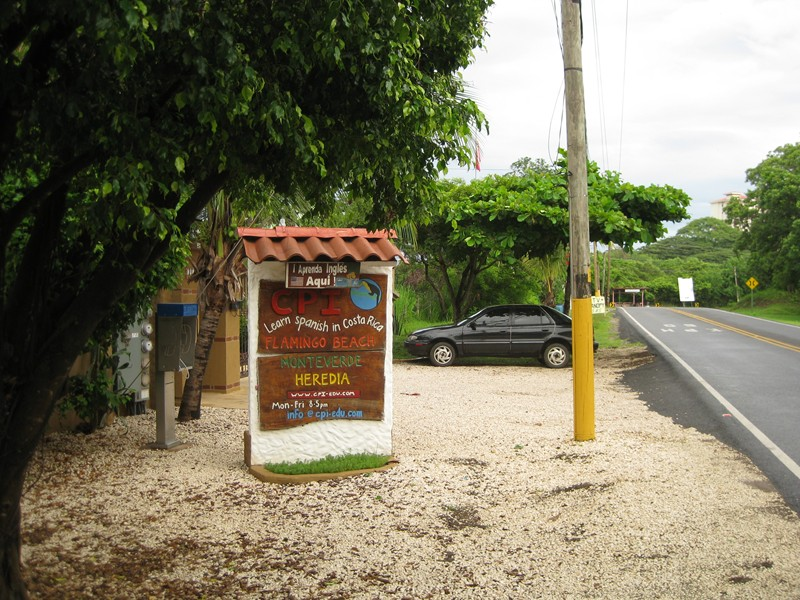 |
The US I knew is gone, so I'm learning the language of the new one. Growing up in LA has made Mexico part of my identity and I feel like I must have had a stroke not to be fluent. The feeling is less than reciprocated (actually, a lot of my relationships are like that).(1) Really wanted to get a pic of me next to the sign in my "Ni Entiendo Wuey" shirt (looks like Nintendo but means 'I never get it,dude.') (1)e.g., the kids at the Bay-area high school who were sent home for wearing US flag bandanas on Cinco de Mayo ("It would have been incendiary," the vice principal said. "I couldn't believe they'd disrespect us like that" said one of the US-born, third generation, well, Mexicans I guess. Gustavo Arrellano likes to prattle on about assimilation in his column, but I don't see it, and when I emailed him for a comment on this, he dodged the question, saying only that Argentine identity is more hard-shelled than Mexican. I've always felt that being white in the US is the absence of identity and I need something more. |
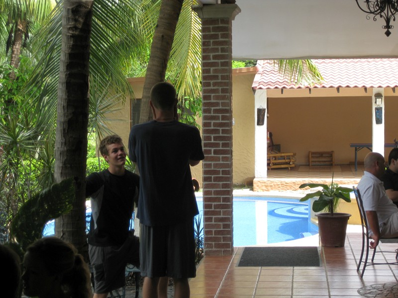 |
Bonfire Jock (left). On the van he was explaining with huge drunken gestures that at 22, he was too old to learn new languages. (No sympathy here.) He kept going on about how some dudes from South Carolina were having a bonfire that night. Didn't figure he'd make it in the next day, but he did, looking blasted. "You go to the bonfire last night? Didn't think you'd make it in," I said. He didn't even look at me, but his eyes said "I don't want to talk about it." |
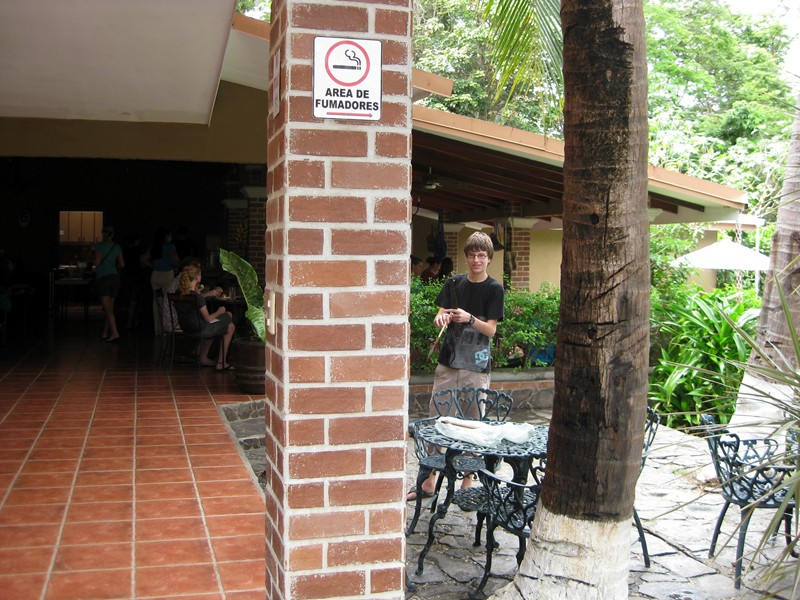 |
Neuromancer (right) kept going on about alll the untagged chickens in the soccer field and what would happen if somebody ate a neighbor's chicken. Finally I commented "If the neighbor couldn't tell, nobody else could either", which got sniggers all around. I got the warm glow of being part of the in-crowd until a sudden blinding flash I realized I was an asshole. With Neuromancer being my real tribesman rather than Bonfire Jock, decided I'd better make nice. Found out that the onliest reason for him being here is to get away from his parents for a couple months, which was conveyed with vituperative intensity. He's a neuroscience geek, and what he really wants to do is develop direct man/machine interfaces like the guy who attached a chip to his radial nerve. |
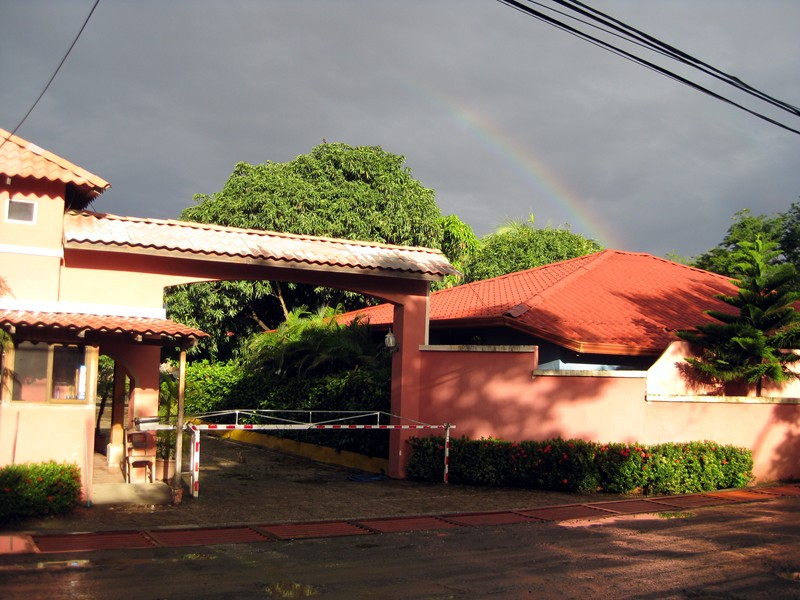 |
Rainbow over the villa compound. Didn't get a pic of the guard--turns out he's one of those dreaded Nicos. He's been in CR for 10 years, likes it. Likes Nicaragua too, he explained, but there's no jobs. Asked if it was safe to travel there. He said totally, security is good these days, it's San Juan (capitol of CR) that's dangerous. Heard that from one of my profesoras, too..two years ago only certain areas were dangerous at night; now you can get mugged anytime, anywhere (he had). Las drogas, naturalmente. |
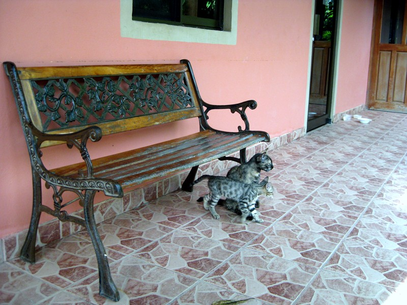 |
The cats (who relieve the guard at night) had tripled since two years ago--here are the two |
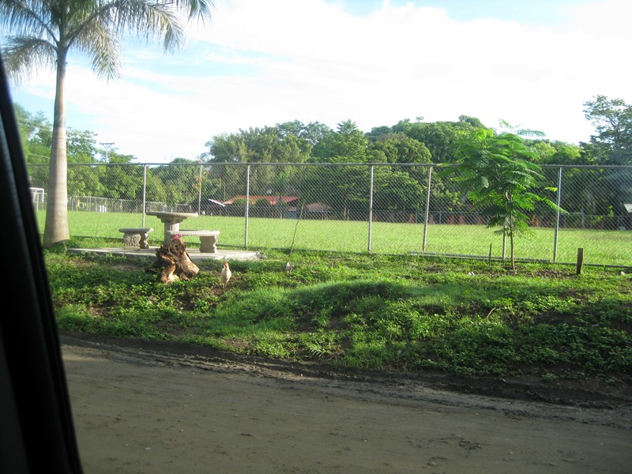 |
| Here's the Potrero soccer field and some unlabeled chickens. The fence wasn't there last time. Assumed it was to stop drug deals, but was told that drugs aren't really a problem in Potreto. It was there to keep people from getting drunk and driving around the field. |
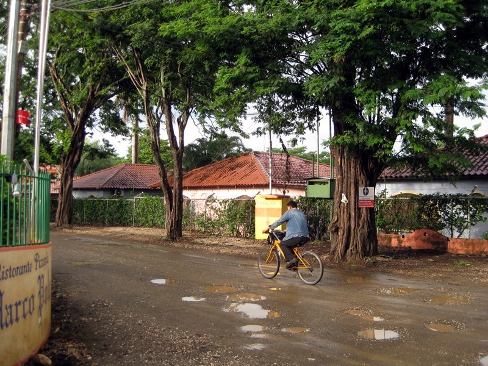 |
Rush hour in Potrero |
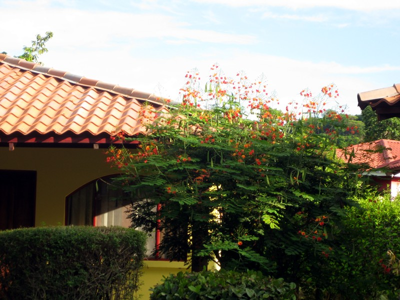 |
Tree in front of my villa |
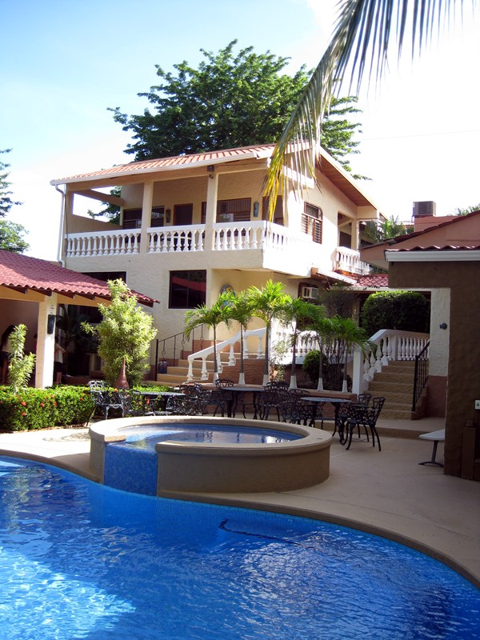 |
| Swimming pool at the school (sorry, Institute). |
Another view from the ashram grounds |
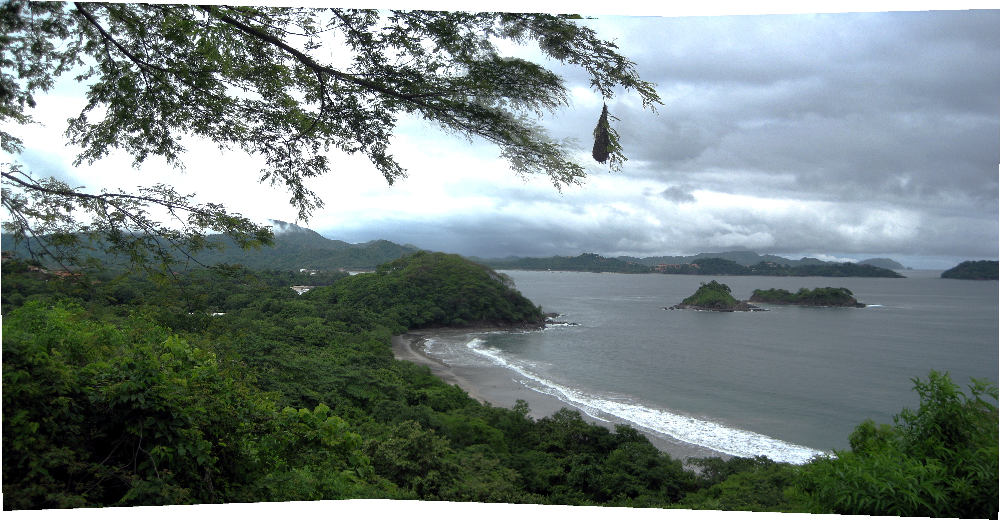